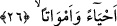

YALAN SAYAGELDİĞİNİZ
AZÂBA DOĞRU GİDİN!
25. Biz, yeryüzünü toplanma yeri yapmadık mı?
26. Hem dirilere hem de ölülere.
27. Yeryüzünde haşmetli dağlar yarattık, sizlere tatlı sular içirdik.
28. O gün, (hakîkatleri) yalan sayanların vay hâline!
29. (İnkârcılara o gün şöyle denilir:) yalan sayageldiğiniz azâba doğru gidin!
30. Üç kola ayrılmış, bir gölgeye gidin.
31. (Ama) ne gölgelendiren ne de alevden koruyan bir gölgeye.
32. O, saray gibi kocaman kıvılcım saçar.
33. Her bir kıvılcım, sanki birer sarı deve gibidir.
34. O gün, (hakîkatleri) yalan sayanların vay hâline!
“Biz, yeryüzünü toplanma yeri yapmadık mı?” Allah önce insana vermiş olduğu
nimetleri tanıtmış oldu. Çünkü bu nimetler asıl mesâbesindedirler. Bu nefsî ve vücudla
ilgili nimetlerin ardından Allah âfâkî; yâni insanı çevreleyen nimetleri sıralamaktadır.
Âyette yer alan “el-Kifat”, nesneleri biraraya getiren ve toplayan şeyin ismidir. Çünkü
bu kelimenin fiili “herhangi birşeyi biraraya getirdi, topladı” anlamına gelir. Buna göre
âyet-i kerîmede denmiş oluyor ki: Biz yeryüzünü herşeyi bağrında toplayıp biraraya
getiren bir nesne kılmadık mı?
26. Hem dirilere hem de ölülere.
“Hem” yeryüzündeki milyonlarca, milyarlarca, sayılara sığmaz “dirilere, hem de”
yine orada sayılarla ifâde edilemiyecek kadar çok “ölülere.”
Yerin üstünde ve kara bağrında sayılara sığmaz derecede canlı ve ölüler bir araya
geldikleri için yeryüzüne, yavrusunu bağrına basan anneye benzetilerek “umm”